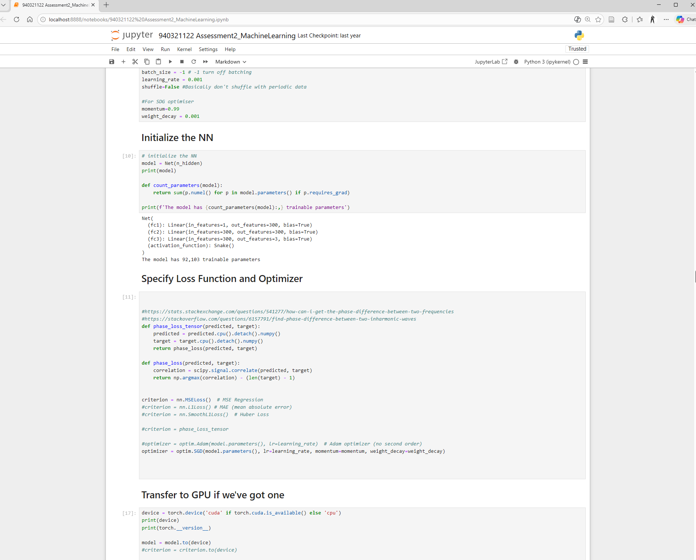
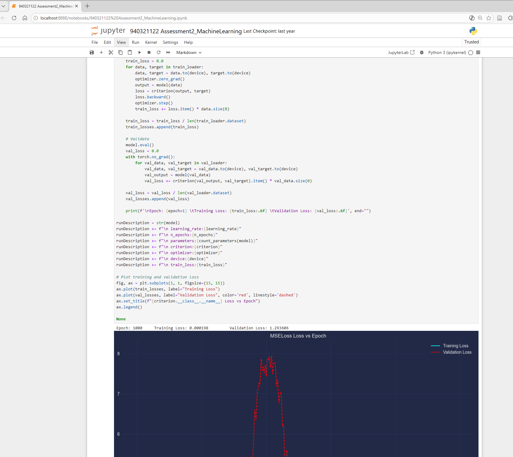
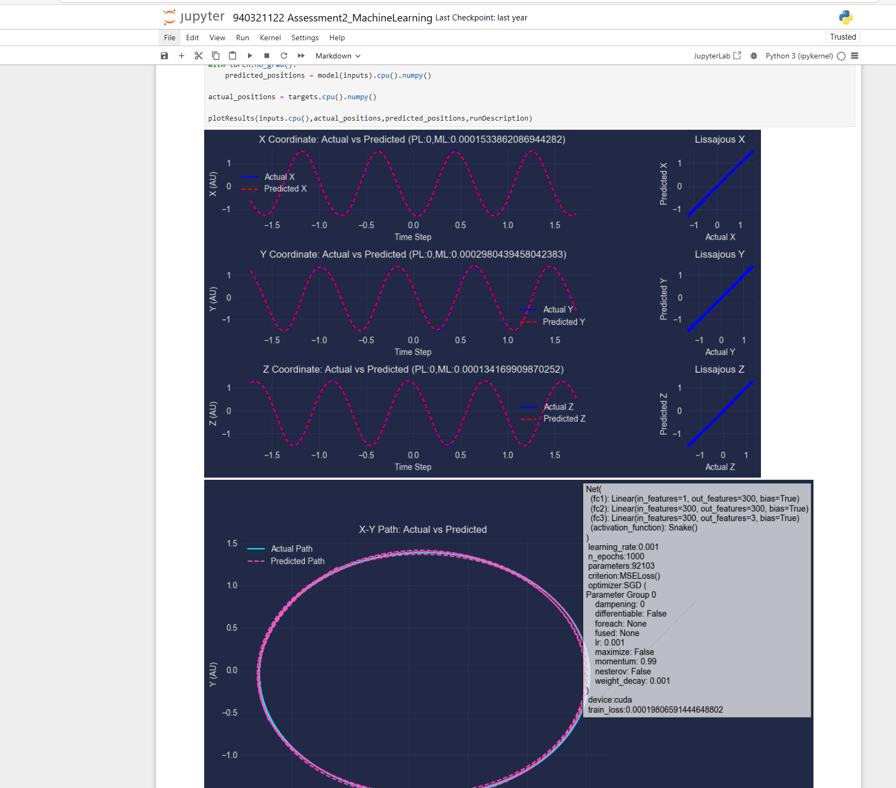

Daniel Bryars

- 20 years in .NET — C# by day, Python by night
- Recently completed MSc in AI (heavy Python use)
dotnetoxford-pythonvdotnet.bryars.com
slides and code available here
Two Languages, Two Philosophies

Python (1991)
Guido van Rossum
- Readability — “code is read more than written”
- Glue language — shell scripts and C
- A hobby project — Christmas 1989
- Bundled with Linux — on every server by 2000

C# (2000)
Anders Hejlsberg
- Java lawsuit — MS needed its own language
- C++ + Delphi — created Delphi
- Closed source — until 2014
- Windows-only — no Linux until .NET Core
Timeline
- 1991 PY Python released
- 1995 PY NumPy predecessor (Numeric)
- ~2000 PY Bundled with Linux distros (Red Hat, Debian)
- 2000 C# C# 1.0 (closed source, Windows-only)
- 2001 PY SciPy & IPython — free Matlab alternative
- 2005 PY NumPy 1.0 (wraps Fortran BLAS/LAPACK)
- 2007 PY scikit-learn begins
- 2011 PY IPython Notebook launches
- 2012 PY Deep learning explodes (AlexNet)
more
Timeline
- 2014 C# .NET goes open source / cross-platform
- 2014 PY Jupyter Project (from IPython)
- 2015 PY TensorFlow released (Google)
- 2016 PY PyTorch released (Facebook/Meta)
- 2018 C# ML.NET 1.0
- 2021 C# TorchSharp (PyTorch for .NET)
- 2022 C# Generic Math / INumber<T> (.NET 7)
Python
- Dynamic
- ~100x slower
- No type safety
C#
- Strongly typed
- JIT-compiled
- Battle-tested tooling
Yet → Python dominates ML
Ecosystem Convergence
- NumPy — Fortran BLAS/LAPACK under the hood
- PyTorch / TensorFlow — CUDA kernels
- Jupyter — interactive notebooks
Everything speaks NumPy
import numpy as np
from scipy import signal
import matplotlib.pyplot as plt
t = np.linspace(0, 1, 1000) # NumPy
noisy = np.sin(2*np.pi*5*t) + np.random.randn(len(t))
filtered = signal.filtfilt(*signal.butter(4, 15, fs=1000), noisy) # SciPy ← NumPy
plt.plot(t, filtered) # Matplotlib ← NumPyOne array type. Every library accepts it. No adapters needed.
Python doesn’t do the maths — it orchestrates C, Fortran, and CUDA
# @ calls into BLAS dgemm (Fortran) — not Python
C = A @ B # matrix multiply
# Broadcasting — no loops, no copies
prices = np.array([10, 20, 30]) # shape (3,)
tax = np.array([[1.1],
[1.2]]) # shape (2, 1)
totals = prices * tax # shape (2, 3) — automatic
# Vectorised operations — one call to C
distances = np.sqrt(np.sum((points - centre)**2, axis=1))
# Slicing — views, not copies
batch = images[0:32, :, :, :] # zero-cost sliceSuccinct and powerful — but can trip you up (print shapes early and often)
Jupyter vs LINQPad
Jupyter
- Fernando Pérez 2001 (as IPython)
- Browser-based notebooks
- Inline plots & rich output
- Standard in academia
LINQPad
- Joseph Albahari 2007
- Desktop scratchpad for .NET
- Brilliant — but niche
- No academic adoption
Same idea, different worlds. Jupyter reached researchers. LINQPad reached developers.



Takeaway
Python won because it made
fast things easy
C# can win where it makes
safe things fast
Live Examples
| Example | Python | C# |
|---|---|---|
| GPU computing | python gpu.py |
dotnet run (Gpu/) |
| Autograd | python autograd.py |
dotnet run (Autograd/) |
| Train MLP (XOR) | python mlp.py |
dotnet run (Mlp/) |
| Duck typing | python duck_typing.py |
dotnet run (DuckTyping/) |
| Lorenz attractor | python lorenz.py |
dotnet run (Lorenz/) |
| Ecosystem (NumPy→SciPy→plot) | python ecosystem.py |
— |
| Vectorisation benchmark | python vectorisation.py |
— |
Python: cd examples/python && pip install -r requirements.txt
C#: cd examples/csharp/<folder> && dotnet run

Lorenz Attractor
Python
import numpy as np
import matplotlib.pyplot as plt
dt, n = 0.01, 10000
sigma, beta, rho = 10, 8/3, 28
xyz = np.zeros((n, 3))
xyz[0] = [0.1, 0, 0]
for i in range(n - 1):
x, y, z = xyz[i]
xyz[i+1] = xyz[i] + dt*np.array([
sigma*(y-x),
x*(rho-z) - y,
x*y - beta*z])
fig = plt.figure(facecolor="black")
ax = fig.add_subplot(projection="3d")
ax.scatter(*xyz.T,
c=np.arange(n), cmap="plasma")C#
const double dt = 0.01;
const int n = 10000;
const double sigma = 10,
beta = 8.0/3, rho = 28;
var x = new double[n];
var y = new double[n];
var z = new double[n];
x[0] = 0.1;
for (int i = 0; i < n-1; i++) {
x[i+1] = x[i]+dt*sigma*(y[i]-x[i]);
y[i+1] = y[i]+dt*(x[i]*(rho-z[i])-y[i]);
z[i+1] = z[i]+dt*(x[i]*y[i]-beta*z[i]);
}
// Plot? ScottPlot? OxyPlot?
// None do 3D scatter well.
// Export to CSV, open in Python.Ecosystem — Everyone Speaks NumPy
Python
import numpy as np
from scipy import signal
import matplotlib.pyplot as plt
t = np.linspace(0, 1, 1000)
noisy = np.sin(2*np.pi*5*t) \
+ np.random.randn(len(t))
b, a = signal.butter(4, 15, fs=1000)
filtered = signal.filtfilt(b, a, noisy)
plt.plot(t, filtered)
plt.show()C#
// Step 1: generate signal
// Math.NET? System.Numerics?
// Step 2: filter it
// Math.NET.Filtering? DIY?
// Step 3: plot it
// ScottPlot? OxyPlot?
//
// Three libraries.
// Three different array types.
// Three sets of docs.
//
// Or...
//
// Process.Start("python",
// "ecosystem.py");